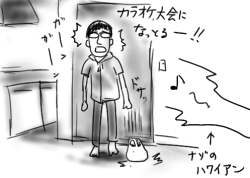
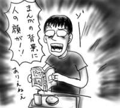

今日は１日中、Word文書を編集していたのですが、Word仕事はどうしてこうもコレステロールが高いのか！！血管という血管が糞詰まりを起こしそうです。
変更箇所を明示するため、編集前にバックアップしておいたファイルと差分を取って表示すると、寸分違わぬ部分をバッサリと打ち消し線で覆い、明らかに編集してあるところは見て見ぬふりの大狼藉。いちいち手動で全変更箇所のフォントの色を変える羽目になったり、今さらと言えば今さらなんだけど、しばらく前までUnix上でEmacsという平穏な環境でコード書いていた身にとってみると、とにかく細かなところがいちいち気に食わない。ギーエー！死ね！死ね！
と心で呪詛を吐き続けていると、隣の人のWordにワトソン博士がコンニチワ。今日の編集分全部がすっ飛んでました。人はWordの家畜か！(鈴木慶一っぽく)
…ぼ、僕の呪詛のせいじゃないですよ？
しかし、Word仕事をしていると、ぐんぐんと物欲が上昇していく自分にとまどいが隠せません。Wordの後ろで立ち上げたWebブラウザでは常に新製品情報(電子デバイスばかり)がスクロール。擬似的に飴と鞭状態を作り出します。労働に対価が支払われるからこそ使えるこの方法。社会人万歳！
普段ほとんどTVを見ない僕のこと、ましてや24時間テレビなんて見るはずもないのですが、今日会社に行くと「西村知美がチャリティマラソンで完走した」という情報が耳に入って来ました。
最初は全く信じられなくて「えー嘘でしょう？だって、そんなことしたら死にますよ？」と答えていた僕ですが、調べてみると、どうやら本当だったようです。ホノルルマラソンで完走したり、いろいろ実績はあるようで、ごめんよトロリン。
西村知美と言えば薬物乱用防止キャンペーン「ダメ、ゼッタイ。」なわけですが、僕にとっては、「DMZ(*)」とは、すでに「ダメ、ゼッタイ。」の略語です。ルータのスペックを見ても「ダメ、ゼッタイ機能搭載！」と読んでしまう。
しかし、西村知美、成りゆきとはゆえ、調べれば調べるほどすごすぎる。「すごいよ！マサルさん」を一揃え、寝室とリビングルームに完備している、あたりはよく知られている情報だとしても、
- ダンナと実家に帰った際、堤灯が出ていたので寿司屋と間違えてお通夜に突入。
- 懐かしのアニメ番組で、スタジオでただ一人、銭形警部が埼玉県警所属だと知っていた。
- 窪之内英策と対談した際、「おかっぴきエイジの頃からファンでした」と発言。
- さんまのからくりTVでいきなりFF10のアーロンについて発言。インターナショナルバージョンも購入。
- 高校生ファンからの「私って子供っぽいんです」という相談に「私もまだコロコロコミックを読んだりします」と返す。
えーと、思いのほかリサーチが行き過ぎたので、取り返しがつかなくなる前(何の？)に、この辺でやめておきたいと思います。とまれ、もどれ、DMZ！
*DMZ : (DeMilitarized Zone=非武装地帯。外部ネットワークとも内部ネットワークとも切り離された区域のこと。DMZに外部公開用のサーバーを設置しておけば、万一サーバーがクラックされたとしても直接内部ネットワークに影響が及ばない)
町内納涼盆踊り大会、今日が本番です。朝からマイクのテストで叩き起こされました。
昼間にリハを重ね、夕方からついに盆踊り大会が開始！各地方の音頭が次から次へと流されて行きます。音頭ばかり延々と聞き続けていると気が狂ってくるので、家を抜け出して食料を買いに出かけました。家から100mくらい離れてもまだ音頭が聞こえていたので、いくらなんでもやりすぎだと思いました。
一週間分の食料を抱えて家に帰って来ると、納涼盆踊り大会は一段落していたのですが、その代わりに納涼カラオケ大会が始まっており、よく分からないハワイアンみたいな歌を、誰だか分からない女性が嬌声をあげて歌い狂っており、そのあまりにお寒い歌唱力にさすが納涼だと思いました。

夏祭りも終わり、アラレちゃん音頭騒動もめちゃんこに収束していたのですが、盆踊りとは本来、お盆にやるものでした。忘れてました。
朝も早くから、家の隣の町内会集会所で、納涼盆踊り大会の練習が始まってしまったのです。今回は、アラレちゃん音頭ではなくて岩槻音頭が流れ続けています。
ちなみに僕は、岩槻音頭というものがこの世に本当に存在するかどうか知らないのですが、歌詞に「♪好き好き岩槻、城下町〜」というフレーズが現れることから勝手に同定しました。「♪踊るあの娘は恋人形〜」だそうです。まあいやらしい！ラブドールなんて！(わざわざ言い直すな)
耳元でインビな歌(気のせい)を歌われ続けていると気が狂ってくるので、家を抜け出して秋葉原まで出かけました。
秋葉原では、西原さんと昨日の実家友人(以下コクガイ=国外勤務だから)と合流し、彼等の買い物につきあってブラブラしました。
コクガイが「日本にしかないものが見たい」というのでメイド喫茶「Cure Maid Cafe」に寄ったのですが、店内ではクレイジーケンバンドの最新アルバム「グランツーリズモ」が丸々一枚そのまま演奏されていて、あまりのそぐわなさに笑いが止まりませんでした(僕一人が)。
年休だったので、気分転換に朝早くに新宿まで出かけました。昼前の新宿は人通りも少なくて、ぶらつくのも悪くない感じです。行く所は本屋とCD屋くらいですが。
歩き疲れると、今度はゲーセンに入って「斑鳩」をプレイです(座れるから)。5面でケアレスミスによって残機が削られ、道なかばでゲームオーバー。ラスボスまで到達できず。5面の安定が急務です。
マクドナルドで59円のバーガーをパクつきながら、戦利品であるところの、ささだあすか『パジャマでごろん 1〜2巻』(花とゆめコミックス)と、小池壮彦『心霊写真』(宝島新書)を交互に読むという、かなり嫌な読書方法で時間を潰したりしました。学生結婚生活でラブにコメなんて卑怯ですなー思わず萌えますなー、ほほう、日本の心霊写真は僕の生年あたりからポストモダンの時代を迎え、二重露光のようなハッキリとしたものから、写ってるのだか写ってないのだかハッキリしてないものへと移り変わっていったのか、というような感じです。

夕方に、一時帰国中の実家方面の友人が、再び国外脱出するために関東に戻って来ているので、合流して適当にぶらついて解散しました。
先週の話です。
会社の売店が、「うす焼き海老せんべい」を40円という破格で特売しており、あまりのうまさに、仕事をしながらほぼ毎日ぺろりと食っていたのですが、特売は今週限りというので、週末に家で食べる分を買っておいたのでした。
今週の話です。
会社に着いてかばんを開けると、未開封の「うす焼き海老せんべい」が！
なんというか、自分の「平日と週末の生活の切り離しぶり」の潔さに涙が出ます。海老せんべいでも繋ぎ止められないのか。いや、海老せんべいでは薄すぎだ。
いつもはお盆に帰省しているのですが、今回は早めに帰省をすませてしまって予定が開いていたところに、西原さんとまさしろさんがコミケに行くと言うので、なんとなく興味半分でついて行くことにしました。ものすごく久しぶりのコミケです。それなりにわくわくします。
会場のスパイスボーイズ＆スパイスガールズ達の間をすり抜けながら、主に音楽系とSF系のサークルをまわり、それなりの収穫を得ました。特にnanosoundsの新譜と風虎通信の宇宙の傑作機シリーズは本当に素晴らしい物でした。エロじゃないところに本質があり、それこそが文化活動の証なのだと思います。
ろくにチェックもしてないどころかパンフすら持ってない状態で満足の行く買い物をしたので、自分の嗅覚もちょっとしたものだと思いました。伊達に20年間、訪れる町訪れる町で本を探しまくっていない。電車に乗っている時も車窓から本屋を探してしまう癖はいまだ抜けません。本すらまともに買えない所で生まれ育った人間の宿命なのです(探す本がマイナだからです)。解決するには、メジャだけで満足するか、逃げ出すかしかなく、僕は当然後者を選択しました(どうでもいい過去話)。
会場は、それなりに気をつけた服装をしているだけでオシャレ順位がぐんぐんと上昇するような特異空間だったので、いい気になっていたのですが、帰宅してみるとおNewのズボンやシャツにコッテリと塩が吹いており、いい服装をしていくとむしろ損であることが身にしみて分かりました(負)。